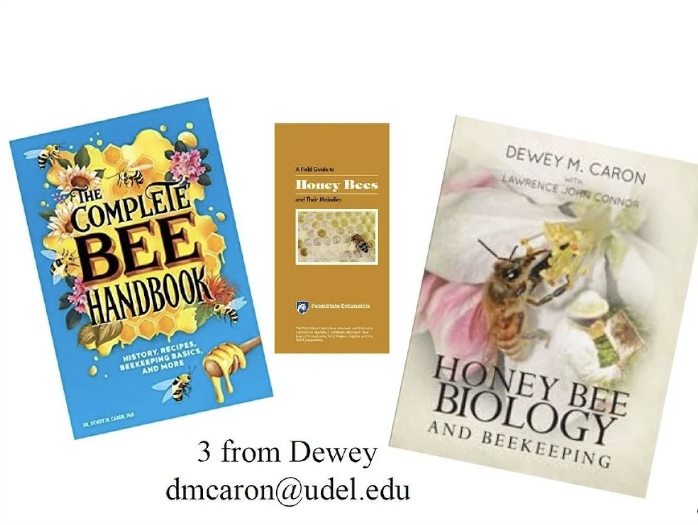

Beekeeping in the Tri-State Area
About SWOBA
The South Western Ohio Beekeepers Association is a non-profit organization. Our mission is to develop beekeeping interest and skill in beginners through veteran beekeepers.
SWOBA is made up of beekeepers from Hamilton, Butler, Clermont, and Warren counties in Ohio and some from Indiana and Kentucky. We have some beekeepers with more than 50 years of experience.
Another goal is to increase the awareness of honeybees and their importance to our environment and food supply. Producing honey with one's own bees is certainly a satisfying by-product to keeping bees. Most members keep two to four hives, but several have seven to fifteen and a few have forty or more. Most members produce honey, beeswax, pollen, and propolis for personal use and as gifts. Some members make a part of their income from the sale of these products. Annual membership dues are Five Dollars.
Beekeeping Books
To order these books, please email Dr. Dewey M Caron: dmcaron@udel.edu
Scheduled Beekeeping Meetings
Our meetings will be a combination of IN-PERSON and ONLINE Zoom meetings. SWOBA members will receive meeting invites as they come up. Please check the Meetings tab for the coming meetings.
In-Person Meetings at Parky's Farm:
- April 20, 2024 @ Noon
- July 13, 2024 @ Noon
- September 14, 2024 @ Noon
Online Zoom Meetings:
- February 25, 2024 @ 7:30 PM
- March 31, 2024 @ 7:30 PM
- April 28, 2024 @ 7:30 PM
- August 25, 2024 @ 7:30 PM
- September 29, 2024 @ 7:30 PM
- October 30, 2024 @ 7:30 PM
- November 17, 2024 @ 7:30 PM
PLEASE CHECK OUR "MEETINGS" PAGE FOR MORE INFORMATION AND TO REGISTER
2024 Annual Beekeepers School Sign Up
Please email us at SWOBAbees@gmail.com for help.
Queens' Sources
- Randy Oliver - Scientific Beekeeping
- Kirk Webster - Kirk Webster website
- Michael Palmer - French Hill Apiaries